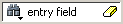

Find and Filter Functions
The Find mode toolbar is shown in Figure 1. The filtering function is denoted by a “Contains” field (Figure 2).
Windows that support both Find (Figure 1) and Filter modes (Figure 2) allow you to toggle between the two modes by doing any one of the following:
Use the Ctrl+M hotkey.
Click the “Find” or “Contains” words in the toolbar at the bottom of the window.
Select the mode from the Find Options popup menu (see Find Options Popup Menu).
The last selected mode is remembered between sessions.
A “Find” toolbar will appear along the bottom edge of the active window when you do either of the following:
Select in the menu bar.
Click the Find icon in the Standard Toolbar.
All of the above actions are toggles - repeat the action and the Find toolbar will close.
The Find or Filter entry fields prefill as you type, based on the context of the current window selection. The find or filter action begins as you type.
There is a simple history mechanism that saves find or filter strings for later use. The keyboard shortcuts to use this feature are:
Ctrl+P — retrieve previous search string
Ctrl+N — retrieve next search string
Other hotkey actions include:
Esc — closes the Find toolbar
Enter — initiates a “Find Next” action
Ctrl+T — search while typing (default is on)
The entry field turns red if no matches are found.
The graphic elements associated with the Find toolbar are shown in Table 1.
The Find Toolbar graphic elements are context driven. The actions available change for each window.
Graphic Element |
Action |
|---|---|
Find |
opens the find toolbar in the active window |
Close |
closes the find toolbar |
Find entry field |
allows entry of find parameters |
Find Options |
opens the Find Options popup menu at the bottom of the active window. The contents of the menu changes for each window. |
|
clears the entry field |
Execute Search |
initiates the search |
|
toggles search direction upward or downward through the active window |
Find All Matches; Bookmark All Matches (for Source window only) |
highlights every occurrence of the find item; for the Source window only, places a blue flag (bookmark) at every occurrence of the find item |
Search For |
Click and hold the button to open a drop down menu with the following options:
|
|
search must match the case of the text entered in the Find field |
Exact (whole word) |
searches for whole words that match those entered in the Find field |
Regular Expression |
Searches for a regular expression; Source window only. |
Wrap Search |
Searches from cursor to bottom of window then continues search from top of the window. |
Structure Window Search Features
The Structure window Find bar supports hierarchical searching to limit the regions of a search. A forward slash (/) character is used to separate the search words. A double slash (//) is used to specify a recursive search from the double slash down the hierarchy (Figure 3). Refer to Finding Items in the Structure Window for more information.

Filter Mode Options
By entering a string in the “Contains” text entry box you can filter the view of the selected window down to the specific information you are looking for.
Button |
Name |
Shortcuts |
Description |
|---|---|---|---|
Filter Regular Expression |
None |
A drop down menu that allows you to set the wildcard mode. A text entry box for your filter string. |
|
Clear Filter |
None |
Clears the text entry box and removes the filter from the active window. |
Wildcard Usage
There are three wildcard modes:
glob-style — Allows you to use the following special wildcard characters:
* — matches any sequence of characters in the string
? — matches any single character in the string
[<chars>] — matches any character in the set <chars>
\<x> — matches the single character <x>, which allows you to match on any special characters (*, ?, [, ], and \)
Refer to Finding Items in the Structure Window and the Tcl documentation for more information:
regular-expression — (Source window only) allows you to use wildcard characters based on Tcl regular expressions. For more information refer to the Tcl documentation:
exact — indicates that no characters have special meaning, thus disabling wildcard features.
The string entry field of the Contains toolbar item is case-insensitive, If you need to search for case-sensitive strings in the Source window select “regular-expression” and prepend the string with (?c).
Find Options Popup Menu
When you click the Find Options icon in the Find entry field it will open a Find Options popup menu (Figure 4).
The Find Options menu displays the options available to you as well as hot keys for initiating the actions without the menu.